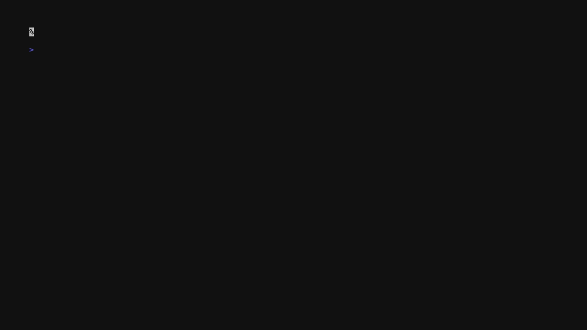
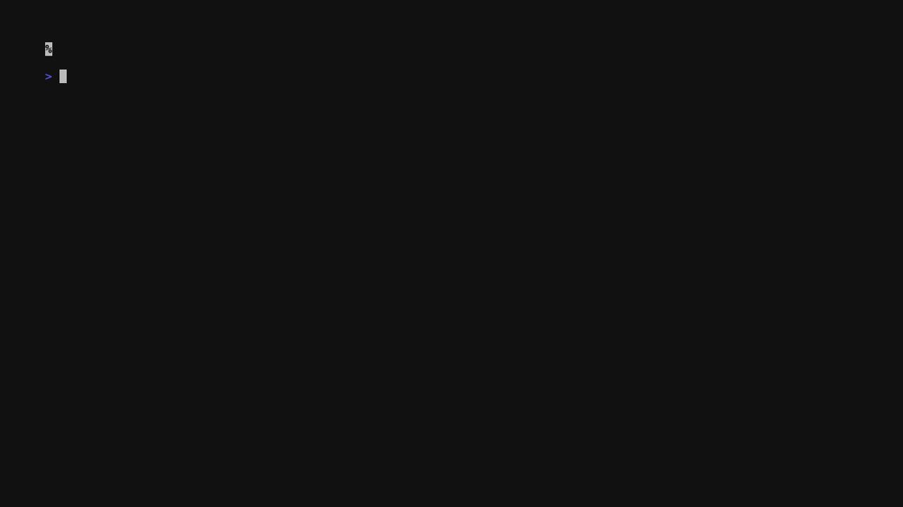

Putting nsjail in Front of BuildKit
A practical sandbox pattern for Dockerfiles you do not fully trust: re-exec the build client inside nsjail, bind only the context and cache, and keep BuildKit as the image builder.

The threat model
Dockerfiles are executable code. An untrusted RUN step can read credentials, talk to local
sockets, or send host data somewhere else. BuildKit is excellent at building images, but the client still
decides which context, sockets, credentials, and paths are exposed to the build.
If you build pull requests from forks, open source examples, or customer bundles, the build host needs a fence. nsjail gives you Linux namespaces, bind allowlists, tmpfs roots, and optional no-egress networking without changing BuildKit itself.
The core pattern
- Write a versioned policy under
sandbox/that defines namespaces, tmpfs mounts, and allowed binds. - Wrap the build client, whether that is Docker buildx, nerdctl, buildctl, or
ktl build. - Fail closed when nsjail or the policy is unavailable.
name: "buildkit-ci"
hostname: "build"
mode: EXECVE
cwd: "/workspace"
clone_newuts: true
clone_newipc: true
clone_newpid: true
clone_newuser: true
clone_newcgroup: true
clone_newnet: false
keep_caps: false
seccomp_string: "DEFAULT ALLOW"
mount { dst: "/" fstype: "tmpfs" rw: true }
mount { dst: "/proc" fstype: "proc" }
mount { dst: "/tmp" fstype: "tmpfs" rw: true options: "size=2G" }
mount { dst: "/run" fstype: "tmpfs" rw: true options: "size=128M" }
mount { src: "/etc/resolv.conf" dst: "/etc/resolv.conf" is_bind: true }
mount { src: "/etc/hosts" dst: "/etc/hosts" is_bind: true }
mount { src: "/etc/ssl/certs" dst: "/etc/ssl/certs" is_bind: true }
mount { src: "/dev" dst: "/dev" is_bind: true rw: true }Request flow
docker/buildx/nerdctl/ktl"] -->|wrapper script| Jail["nsjail
policy + binds"] Jail -->|binds /workspace| BuildKit["BuildKit daemon
rootless or docker.sock"] BuildKit -->|pull/push| Registry["registry"] BuildKit --> Image["image + cache output"] Jail -. sandbox logs .-> Dev
Docker buildx wrapper
This form is a drop-in wrapper for teams that already run Docker buildx. The important part is that the wrapper binds only the working tree, a build cache, and the builder socket.
#!/usr/bin/env bash
set -euo pipefail
POLICY=${POLICY_PATH:-$PWD/sandbox/linux-ci.cfg}
CTX=${1:-.}; shift || true
CACHE=${CACHE_DIR:-$HOME/.cache/buildkit}
BUILDER=${BUILDER_SOCKET:-/var/run/docker.sock}
mkdir -p "$CACHE"
exec nsjail \
--config "$POLICY" \
--bindmount "$PWD:/workspace" \
--bindmount "$CACHE:/bk-cache" \
--bindmount "$BUILDER:/var/run/docker.sock" \
--cwd /workspace \
-- docker buildx build "$CTX" --builder default "$@"buildctl wrapper
Rootless BuildKit or a remote BuildKit endpoint is a better fit for strict builds because you can avoid
binding the Docker socket. With clone_newnet: true, keep the endpoint reachable through an
explicitly allowed path or address.
#!/usr/bin/env bash
set -euo pipefail
POLICY=${POLICY_PATH:-$PWD/sandbox/linux-ci.cfg}
ENDPOINT=${ENDPOINT:-unix:///run/user/1000/buildkit/buildkitd.sock}
CTX=${1:-.}; shift || true
CACHE=${CACHE_DIR:-$HOME/.cache/buildkit}
mkdir -p "$CACHE"
exec nsjail \
--config "$POLICY" \
--bindmount "$PWD:/workspace" \
--bindmount "$CACHE:/bk-cache" \
--bindmount "${ENDPOINT#unix://}:${ENDPOINT#unix://}" \
--cwd /workspace \
-- buildctl --addr "$ENDPOINT" build --local context=. --local dockerfile=. "$@"Filesystem view
tmpfs"] Run["/run
tmpfs"] Work["/workspace
bind: repo"] Cache["/bk-cache
bind: cache"] Dev["/dev
bind"] end Host["host filesystem"] -. hidden by default .-> View Work -. explicit bind .-> Host Cache -. explicit bind .-> Host
How ktl embeds it
ktl build carries this pattern directly. The command exposes --sandbox,
--sandbox-config, --sandbox-bind, --sandbox-probe-path,
--sandbox-logs, and --hermetic. On Linux it re-execs itself inside nsjail,
binds the build context as /workspace, binds cache as /ktl-cache, and fails closed
when sandboxing is required but unavailable.
ktl build . \
-t ghcr.io/acme/app:pr \
--sandbox \
--sandbox-config sandbox/linux-ci.cfg \
--sandbox-probe-path /etc/shadow \
--sandbox-logs
ktl build . \
-t ghcr.io/acme/app:locked \
--hermetic \
--sandbox \
--secure

CI recipes
jobs:
build:
runs-on: self-hosted
steps:
- uses: actions/checkout@v4
- name: Install nsjail
run: sudo apt-get update && sudo apt-get install -y nsjail
- name: Build with nsjail and buildx
run: |
POLICY_PATH=$PWD/sandbox/linux-ci.cfg \
./bin/build-with-nsjail . -t ghcr.io/acme/app:pr-${{ github.sha }}Hardening knobs
- Set
clone_newnet: truefor no-egress builds. - Use rootless or remote BuildKit when you can avoid binding
/var/run/docker.sock. - Bind specific credential files instead of the entire home directory.
- Keep separate caches for trusted and untrusted inputs.
- Export nsjail logs as CI artifacts so policy failures stay debuggable.
Production checklist
- Policy lives under
sandbox/and is reviewed like code. - Wrapper scripts fail if nsjail or the policy is missing.
- CI jobs keep sandbox logs on failure.
- Hermetic mode is tested before it becomes a release gate.
- A probe proves host-only files such as
/etc/shadoware hidden.